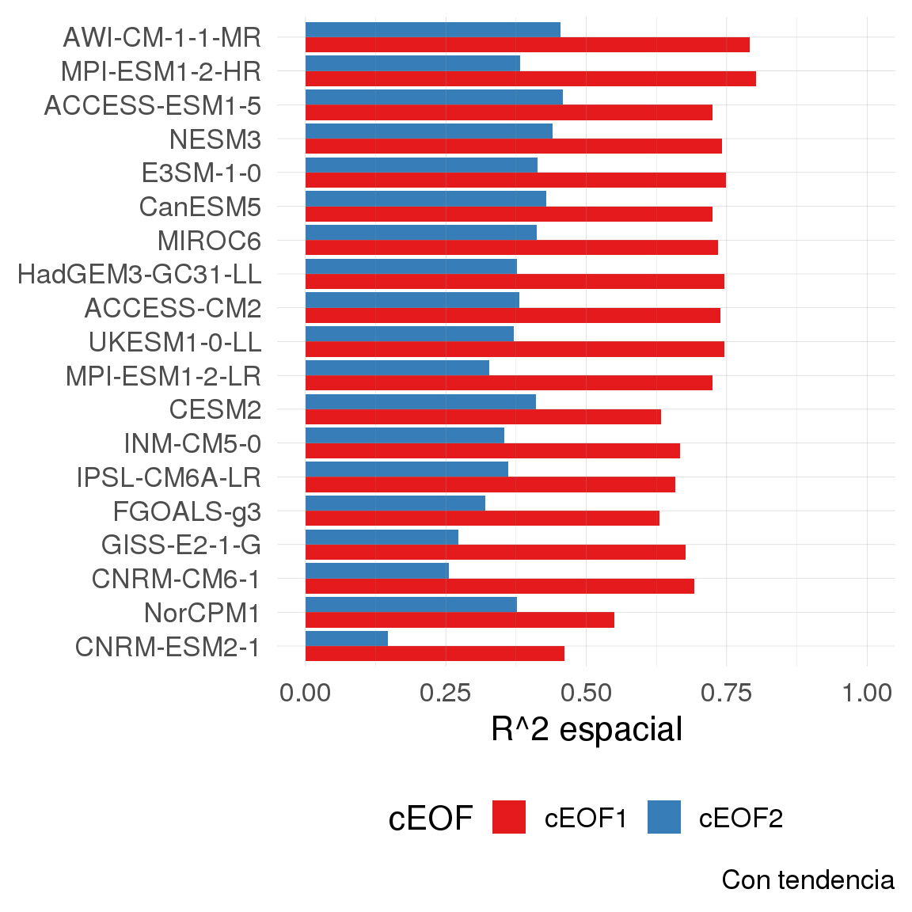
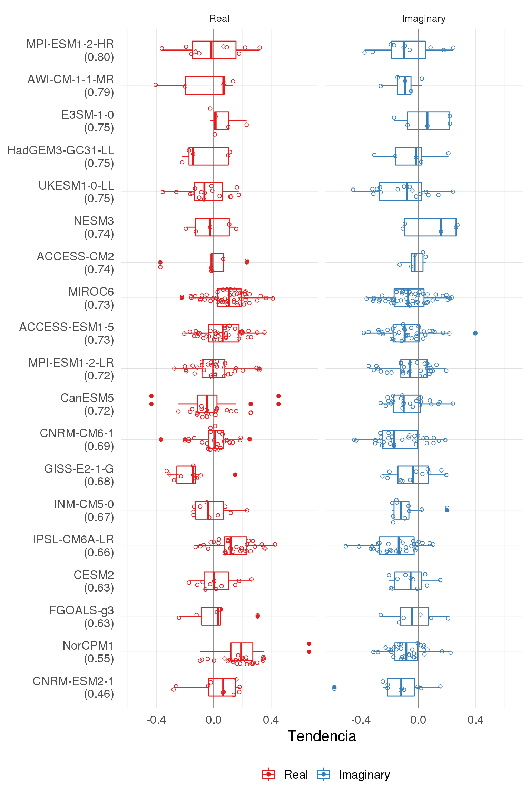
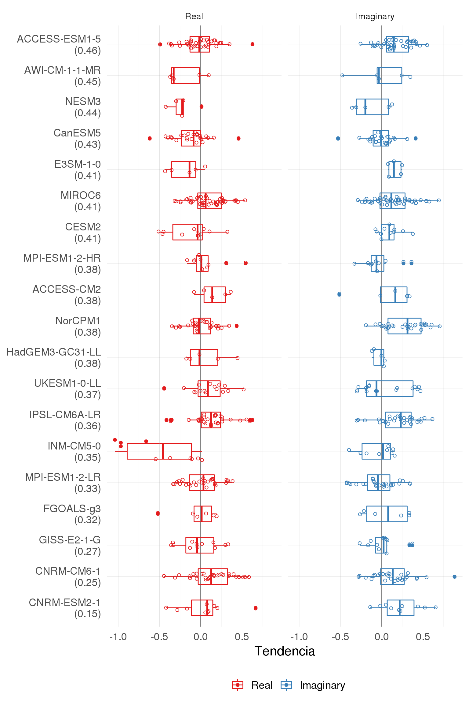
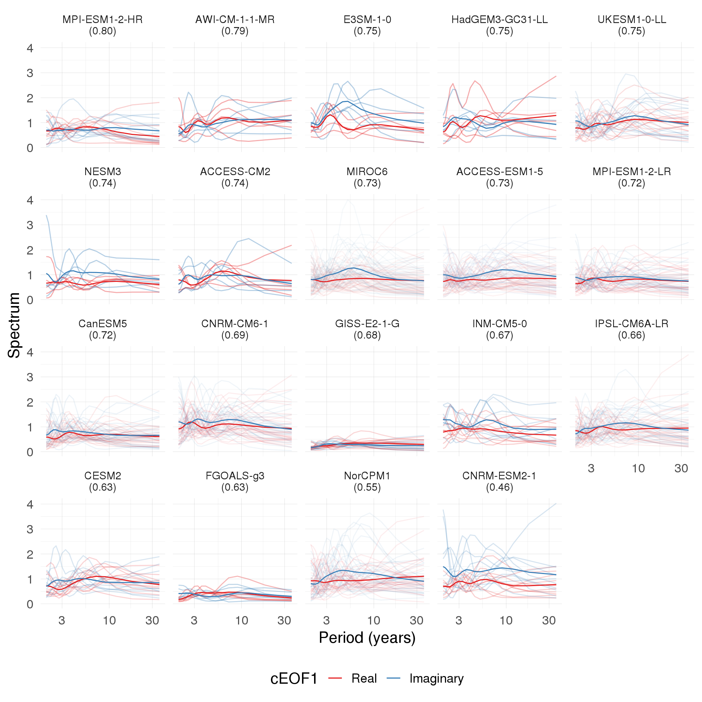
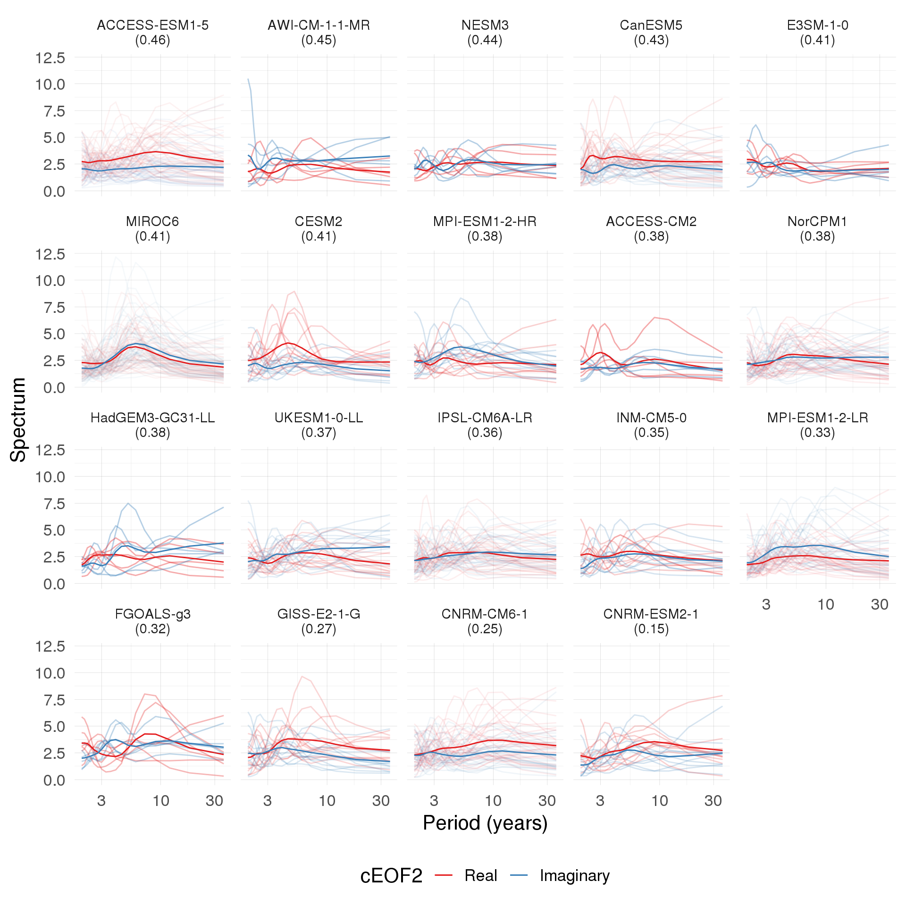
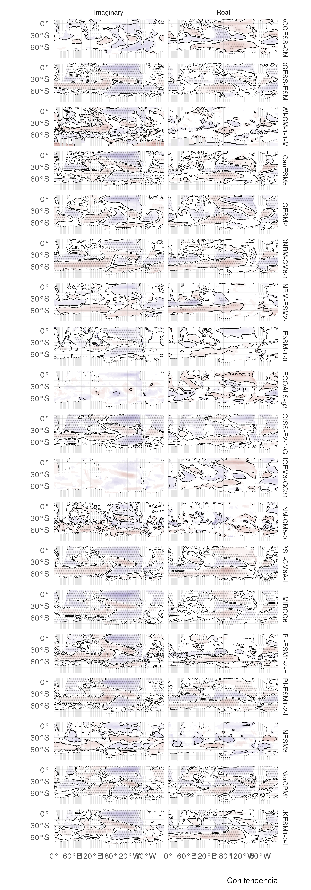
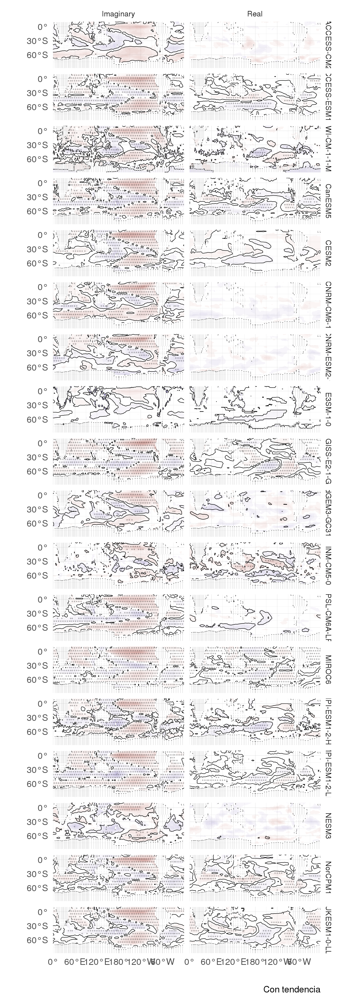
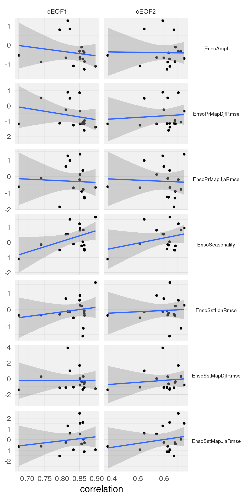

2 Resultados
Figure 2.1: \(r^2\) de los patrones espaciales de cada modelo con ERA5 para cada cEOF. Tendencioso, Destendenciado
La Figura ?? muestra el \(r^2\) de los modelos para los dos cEOFs. Por alguna razón los valores del superensemble tienen menos correlación que los miembros en promedio ¯\_(ツ)_/¯.
2.1 Parte espacial
Las Figuras ?? y ?? muestan el cEOF1 en 50 hPa y 200 hPa respectivamente. En general los patrones son bastante similares, especialmente en la estratósfera, donde e patrón es de mayor escala y entonces hay menos chances de cosas que fallen. Sin embargo, la localización de los centros no parece estar muy bien en algunos modelos. En 50 hPa IPSL-CM6A-LR, CNRM-CM6-1 y CNRM-ESM2-1 tienen la onda corrida hacia el oeste y un r^2 relativamente bajo.
Figure 2.2: Campos espaciales de cEOF1 en 50 hPa. Tendencioso, Destendenciado
Figure 2.3: Campos espaciales de cEOF1 en 200 hPa. Tendencioso, Destendenciado
En 200 hPa la cosa es un poco más compleja por los detalles de escala más chica, pero en general parece bien.
En las Figuras ?? y ?? se muestran lo mismo que antes pero para el cEOF2.
Figure 2.4: Campos espaciales de cEOF2 en 50 hPa. Tendencioso, Destendenciado
Figure 2.5: Campos espaciales de cEOF2 en 200 hPa. Tendencioso, Destendenciado
2.1.1 Media multimodelo
Finalmente, la Figura ?? muestra los patrones promedio multimodelo para cada cEOF y cada parte.
Figure 2.6: Media multimodelo (sombreado) de los campos espaciales de cada cEOF, parte y nivel. Los contornos marcan los patrones de ERA5. El \(r^2\) entre ERA5 y la media multimodelo está entre paréntesis. Tendencioso, Destendenciado.

El patrón medio multimodelo es increíblemente similar al patrón de ERA5, con niveles de \(r^2\) del orden del 90%.
En base a esto y a la metodología usada en la literatura, propongo que un próximo paso para evaluación de atribución o tendencias futuras use este patrón promedio para obtener las series temporales en vez de los propios de cada modelo.
2.2 Parte temporal
Para analizar las propiedades de los modos de cada modelo uso las series temporales propias de cada modelo.
Las Figuras 2.7 y 2.7 muestran las tendencias lineales de cada cEOF. El recurado gris marca la región aproximada de insignificancia estadística al 5% (\(\pm\) 2 errores estándar) y la conclusión es que no hay tendencias significativas.
Figure 2.7: Tendencias durante todo el período (en desvíos estándares por década) para la parte real e imaginaria del cEOF1 de cada miembro de cada modelo. El área gris marca la región aproximada de insignificancia estadística usando \(\pm\) 2 errores estándares, tomando el error estándar promedio de las estimaciones de cada modelo.
Figure 2.8: Igual que la Figura 2.7 pero para el cEOF2.
Las Figuras 2.9 y 2.10 muestran periodogramas para cada cEOF con una línea por miembro y una línea gruesa marcando el periodograma promedio.
Figure 2.9: Espectros de Fourier para la parte Real e Imaginaria del cEOF1. En línea obscura es el espectro promedio de todos los miembros, que se muestran en líneas translúcidas.
Para el cEOF1, no hay mucha señal. Algunos miembros tienen señales altas pero en el promedio es básicamente chato, coincidente con ERA5.
Figure 2.10: Igual que Figura 2.9 pero para el cEOF2. En recuadro negro, modelos que tienen un período importante cerca de 3 años en la parte imaginaria del cEOF2.
Para el cEOF2, algunos modelos tiene una señal consistente de ~3 años en la parte imaginaria, también consistente con ERA5. Sin embargo, la señal no aparece en todos los modelos.
Dada la relación entre ENSO y el cEOF2 se puede ver si los modelos que tienen la periodicidad clara de 3 años también tienen esa periodicidad en el ENSO.
La Figura 2.11 Muestra los periodogramas del el índice de ENSO34 de cada modelo y miembro. Se ve que, en efecto, los modelos seleccionados antes tienen un período en el ENSO más claro que el resto.
Figure 2.11: Espectros de Fourier para los índices ENSO34 de cada modelo. En línea obscura es el espectro promedio de todos los miembros, que se muestran en líneas translúcidas. En recuadro negro, los mismos modelos recuadrados en la Figura 2.10.
2.3 SST
Finalmente, queremos evaluar si los modelos capturan correctamente la relación entre los modos y las anomalías de temperatura de la superficie del mar.
La Figura ?? muetra la regresión para el cEOF1. Todos los modelos tienne valores de regresión altos y significativos en casi todo el globo. Esto no es consistente con lo observado en ERA5, en donde no hay relación entre el cEOF1 y las SSTs.
Figure 2.12: Regresión de cEOF1 con la SST para la parte real e imaginaria. Tendencioso, Destendenciado
Figure 2.13: Igual que Figura ?? pero para el cEOF2. Tendencioso, Destendenciado
La Figura ?? muestra lo mismo para el cEOF2. Este modo también muestra regresiones signifiativas en todo el globo. El patrón en la región ENSO es más o menos consistente con ERA5: relación positva con la parte imaginaria y casi ceo con la real. Sin embargo, en este modo también las relaciones significativas son mucho mayores que en ERA5.
La Figura 2.14 muestra el promedio multimodelo de estas regresiones.
Figure 2.15: Relación entre la correlación espacial de cada cEOF de cada modelo con ERA5 y valores normalizados de las métricas de performance de ENSO según Planton et al. 2021.

Figure 2.16: Igual que la Figura 2.15 pero para las métricas de teleconexiones de ENSO.
